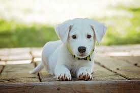
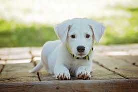

:
find your pet
Companion dog usually describes a dog that does not work, providing only companionship as a pet, rather than usefulness by doing specific tasks. Many of the toy dog breeds are used only for the pleasure of their company, not as workers.
A service dog is a type of assistance dog specifically trained to help people who have disabilities, such as visual impairment, hearing impairments, mental illnesses, seizure disorder, mobility impairment, and diabetes.
A guard dog or watch dog (not to be confused with the attack dog) is a dog used to guard against, and watch for unwanted or unexpected people or animals. The dog is discriminating so that it does not annoy or attack familiar people.[1]
The Aegean cat is a naturally occurring landrace of domestic cat originating from the Cycladic Islands of Greece. It is considered a natural cat, developing with out human interference.
The Bengal is a domestic cat breed developed to look like exotic jungle cats such as leopards, ocelots, margays and clouded leopards.Bengal cats are generally a bright orange to light brown colour
The Arabian Mau is a formal breed of domestic cat, originated from the desert cat, a short-haired landrace native to the desert of the Arabian Peninsula.
Like Us
Blog Us


 
